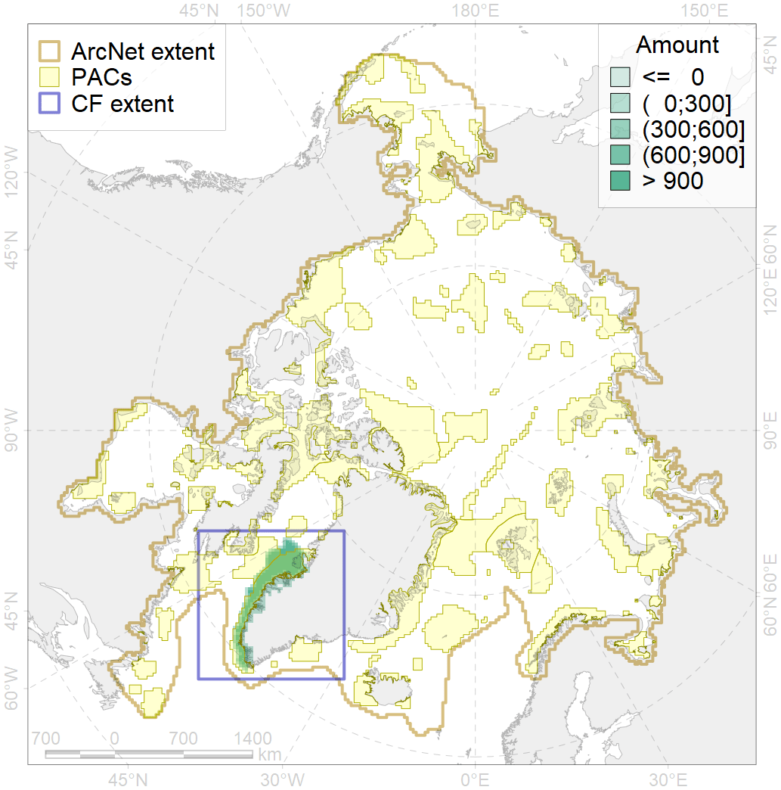
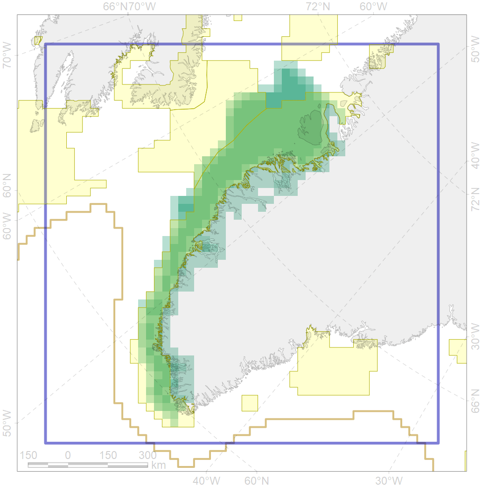

7048

| CF code | 7048 |
| CF name | South-western Greenland transitional zone |
| Time Period | 1900-2010 |
| Source(s) | Spiridonov et al., in prep. |
| Seasonality | 1-12 |
| Depth Horizon | Sea floor |
| Methodology | Boundaries derived from biogeographic regionalization scheme, which is in preparation for publication |
| Use Restrictions | Not for public use prior to publication (expected in early 2020) |
| Author Name | V. Spiridonov |
| Notes | |
| Scenario’s Target | 0 |
| Target Achievement | NaN (Scenario: Inf%) |
| PAC | Share of the Total Amount within the PAC | Share of the Target Achievement for the ArcNet | PAC’s Contribution to the Target Achievement |
|---|---|---|---|
| 44 | 71.4%81.1% | Inf% | 84.3%93.2% |
| 45 | 8.3%11.7% | Inf% | 9.8%13.7% |
| inner | 79.7%92.8% | Inf% | 94.1%106.9% |
| outer | 20.3%39.7% | Inf% | 5.9%27.6% |
| † supplement values are for area consistence whereas principal values are for Accenter compatible gridded stats |